An aerospace engineer by training, a product and program lead by trade, and a maker the whole way through. I turn hard technical systems into things people can understand, use and trust.
Every project starts with people and moves toward shipping, but rarely in a straight line. Feedback sends the work back to whichever step it questions. I learned this loop over years of building, shipping and getting things wrong, and sharpened it in Stanford’s LEAD program.
UnderstandWatch and talk with the people who will use it.
DefineWrite down the problem worth solving.
PrototypeBuild the cheapest version that answers the current question: a sketch, a working demo, then an integrated build, before tooling, machining or code.
TestPut it in people’s hands, watch what happens and refine it.
ShipHand it to the team or manufacturer that scales it.
2022–present
Apple
Senior Engineering Program Manager
I lead product for the developer tools behind a robotics platform, and build much of them myself through agentic development. Before that, I owned the visualization, review and field-testing tools for an autonomy program.
I took a computer-vision parking-analytics company from Jaguar Land Rover’s tech incubator to its acquisition by Numina, a smart-city IoT company.
2011–2015
Embry-Riddle Aeronautical University
BS, Aerospace Engineering
I studied aerospace engineering and captained university teams in international drone and aerial robotics competitions.
Apple · Special Projects · Senior Engineering Program Manager
Data Pipeline
A single path from every device and data collection to evals, dashboards and model training, linked by device and time.
Understand
Devices uploaded snippets of their recordings when bandwidth and compute allowed, and sometimes not at all, so people couldn’t tell where their data was. Even when it existed, finding yesterday’s or last week’s data for their own device was hard, and moving from a device down to its logs, or up to annotations and evaluations, was harder. The old web view queried the database directly on every page, so it was slow and painful to use.
Define
Make the data observable: from any device to its logs, annotations, evaluations and reports, and back, with links that open straight into the right app.
Prototype
The platform rests on two things: an API designed for these questions, and dashboards that read ready, cached data instead of running costly queries on every view.
The device’s telemetry and anything collected alongside it, such as audio, video and inference logs, are linked by serial number and time. Audio and video train models that run on the device, telemetry drives debugging, and dashboards link straight to the debug tool, so every view leads back to the source data.
I set the product vision with the people who use the platform, and planned and assigned the work across teams with the engineering manager.
Ship
The new API and dashboards are live, and the annotation and visualization tools both use the API for annotations. Teams across the organization train and tune models on it.
Next is tracking each recording from the moment it’s made: whether it uploaded, was ingested or failed, and which evaluations it fed.
Loon · Mission Control · Product Manager
Flight Test Program
The reliability and flight tests that qualified a stratospheric balloon fleet for commercial service, from the hangar to the call to bring a balloon down. I ran them hands-on.
312 dayslongest flight, on a configuration we qualified
Understand
A balloon stayed aloft for up to a year in the stratosphere, through freezing cold, static in clouds, humidity and repeated hot and cold cycles. Few off-the-shelf parts had ever been validated for that lifecycle or those conditions, so every new subsystem had to prove itself in flight.
Define
Each test flight had to answer its question safely: launch only when the airspace, winds and weather allowed, and know during the ascent whether the balloon was sound.
Test
I ran tests hands-on and oversaw them with subsystem engineers. In the Moffett Field hangars, payloads were integrated and new subsystems went through reliability testing before they flew, including lightning-strike tests.
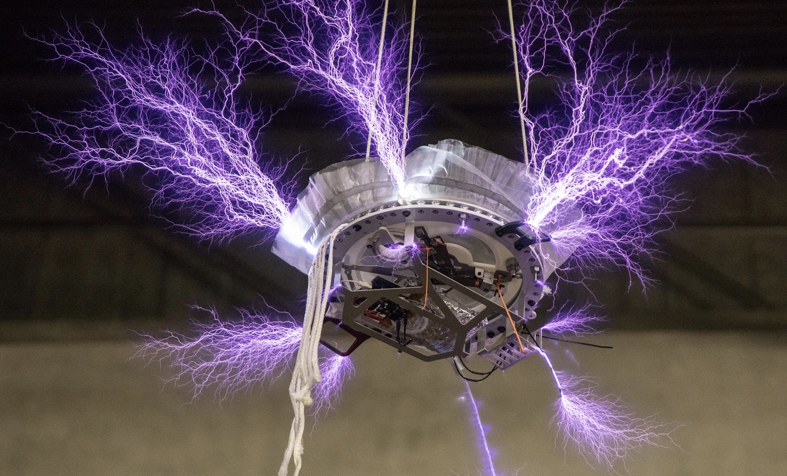
I defined each flight test and chose its launch day. In Winnemucca, Nevada, that meant working around restricted-airspace activations at a nearby Air Force base; in San Juan, Puerto Rico, around the commercial airport’s operations. Both depended on the ascent winds and the weather: no launch in rain or high wind, and preferably by day so the ground crew could see. We tested the automation and ground procedures by hand before relying on them. On launch day, mission control and the ground crew worked through every step together, and nothing moved on until the step before was safe and nominal; otherwise we scrubbed.
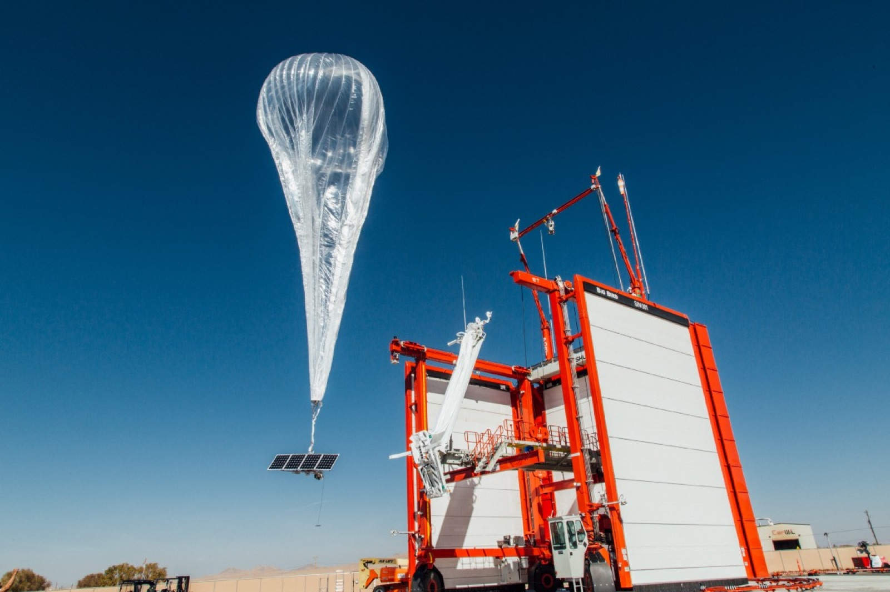
After launch, we monitored the balloon and sent commands by hand for any test step that wasn’t automated. The critical moment was superpressure, when the envelope pressurizes and shows whether it is sound, leaking or has failed. A failure meant coordinating an emergency descent with air traffic control and clearing traffic from a safe buffer around the balloon. A sound balloon was either brought down once the test was complete or left aloft for hours or days to prove it over time.
Ship
The testing qualified the production configurations used in commercial service, where each balloon had to last 100 days or more aloft. Production flights ran much the same way, with more of the monitoring automated. The longest flight lasted 312 days before it was brought down and landed.
Ungodly Design · Founder and Designer
Keyboard PCB
A drop-in board for the Rama U80, a discontinued luxury keyboard whose original board allowed one fixed layout. I designed mine in-house, built to each buyer’s layout.
100+boards sold, each hand-soldered to order
Understand
The original board had no spare parts and one fixed layout: a 7u spacebar with awkwardly sized modifier keys.
Prototype
I reverse-engineered the original board’s outline and mounting, then designed the schematic in-house around an RP2040, running QMK firmware with VIA. Buyers choose a standard 6.25u bottom row, ISO Enter, split Backspace, stepped Caps Lock or split Shifts. Each board ships with hotswap sockets soldered to that layout, and per-key RGB.
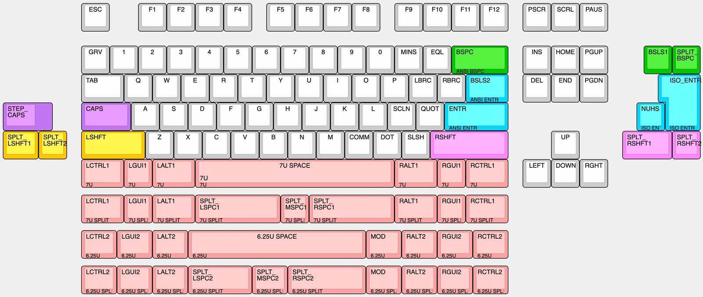
1 · Every layout the board supports, one color per choice
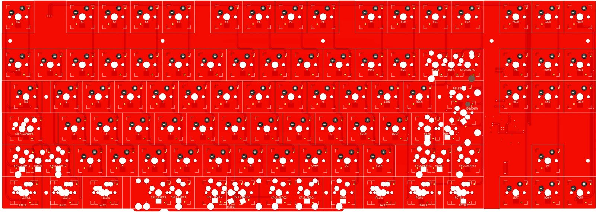
2 · Key side: a footprint for every option
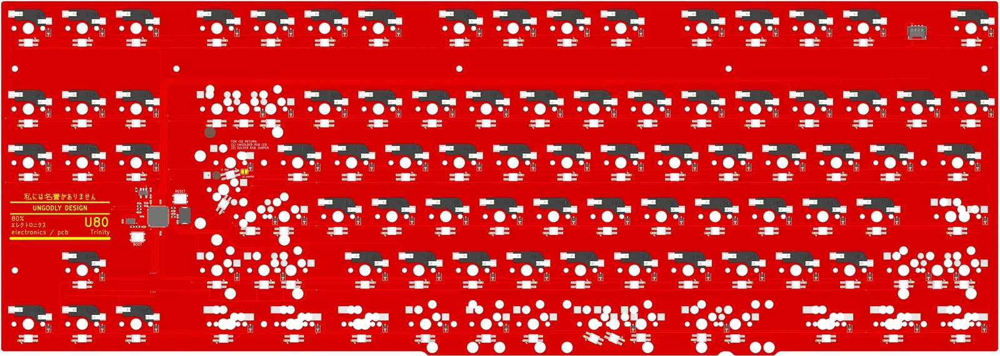
3 · Back: the controller and a hotswap socket under each key
Ship
I’ve sold more than 100, each hand-soldered to order.
Ungodly Design · Founder and Designer
Magnetic Car Accessory
A replacement for a stock part that damaged the Model Y, taken from a paper sketch to injection molding at volume.
4,000units sold in the first two years
Understand
The stock hitch cover was poorly designed and damaged the Model Y. Owners needed one that attaches magnetically and comes off without harm.
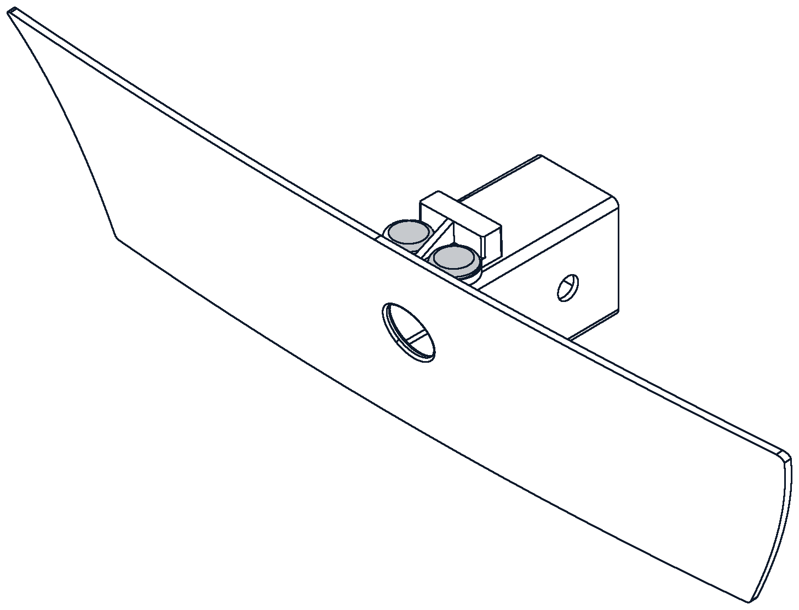
Prototype
I sketched against the real part, then made about a dozen 3D-printed prototypes to fit the swept surface to the Model Y exactly. The part was too large for my printer, so I printed it in two halves and held them together with chopsticks for each test fit. None of the iterations needed tooling.
Ship
Once the fit was settled, a manufacturer in China injection-molded it in bulk. It sold 4,000 units in its first two years. At launch, demand outran expectations and I was packing and posting 100+ shipments a day myself. As orders grew, fulfillment moved to shipping pallets to marketplace warehouses.
What I’d do differently
Copies from other sellers eventually took over the market. A simple design is hard to defend, and I’d plan for that from the start.
Ungodly Design · Founder and Designer
Sauna Controller
A custom high-voltage controller with open-source software, so a home sauna starts remotely without the stock controller’s paid unlock.
$600software unlock for features the hardware already had
Understand
The stock controller had Wi-Fi, but locked remote control behind a $600 unlock and didn’t support HomeKit. Owners should own what their hardware can do, not rent a license to use it. At the sauna, it ran from a dial: click to switch on, turn to set the temperature, then wait for it to heat.
Prototype
I laid out the components before the board footprint. Rather than a daughterboard replacing the stock board’s microcontroller and firmware, I chose a general controller for high-voltage equipment: a sauna, a steam room or a hot tub. That meant learning high-current design for a 6 kW heater: thermal relief, creepage and clearance distances, and relays rated for the load.
The hardware is the product; the software is open. One version runs on a Raspberry Pi with Homebridge, the other on an ESP32 with ESPHome, so owners can customize it the way they would anything else in a self-hosted smart home.
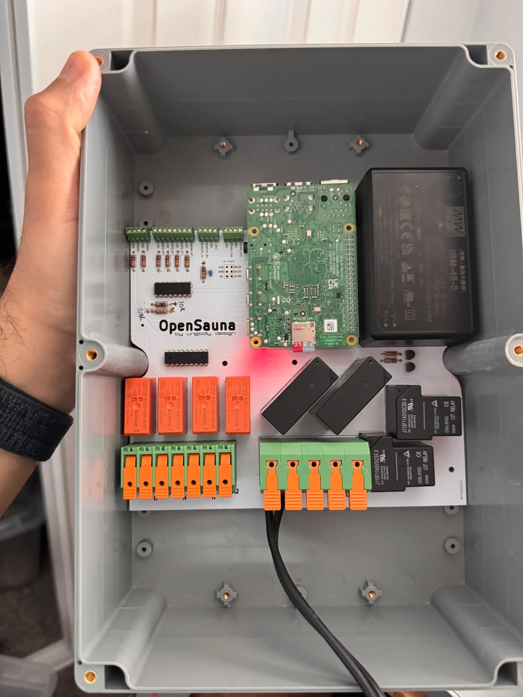
Ship
It runs 24/7 and heats the sauna on demand or on a schedule, so it’s ready when I arrive. Starting it away from home goes through the Apple Home hub, with no paid unlock.
Apple · Special Projects Group · Senior Engineering Program Manager
Autonomy Field Testing
A GPS app that guides one operator through each test against a ghost of the simulation, so the platform’s own data decides pass or fail.
10 minto brief and run each test, down from an hour
Understand
I shadowed test runs and interviewed the operators. Each run took two people: one to operate the platform and one to call out the test as it went. Every new test meant an extensive briefing, operators needed several attempts before they ran what the test intended, and each run was judged on a clipboard, best two out of three.
Define
Two goals: make pass or fail a measurement instead of a judgment call, and make a new test something one operator can follow on the first try.
Prototype
A GPS app that guides the operator through each test with step-by-step cues: when to start and stop, and what to do at each checkpoint. It shows a ghost of the platform to match, like a racing game, where the ghost is the test derived from simulation. The ghost carries a buffer. Each checkpoint is scored on how far and how long the platform strays from it on the way there, and a run passes only when every checkpoint does. Harder tests add dynamic scenarios, including adversarial ones.
Test
Operators usually understood a new test on a single trial run, then went straight into runs that counted: one or two per test instead of best of three. One person ran the test. The second no longer had to call it.
Ship
Pass or fail came from what the platform recorded about itself, such as position and acceleration, checked against the simulation. The remaining gap came from what the simulation couldn’t fully model: platform acceleration, air resistance and human reaction time. Tests ran from a real-time server and API, so simulation engineers could design a test and add it to the next day’s schedule without a new round of briefings. Briefing and running each test took 10 minutes, down from an hour. Every result was published the moment a run ended.
Apple · Special Projects · Senior Engineering Program Manager
Real-Time 3D Demo
A real-time 3D staging of a live device demo, with camera views on the conference room display so the whole room can follow it.
<50 msstream recovery after a network drop, down from 3 s
Understand
In a conference room, attendees couldn’t see from their seats what the device was showing or doing, and had to choose between watching the stage and watching the screen. The point was to make the device’s experience visible to the whole room.
Prototype
I built an internal app in RealityKit that runs the demo’s 3D scene live, with scene and camera controls tuned to the presentation’s style. I worked with human-interface designers throughout: they reviewed each build and sent visual feedback, and I iterated until the app was ready to hand off. The app also covers device setup, controls a presenter can run, and streaming that recovers from a network drop in under 50 ms, down from 3 s.
Ship
I handed it to a partner team that owned the presentation tool and its streaming SDK, which I had no access to. Their tool already ran RealityKit, so they brought in my assets, data stream and camera transformations on top of the SDK, for lower latency and higher frame rates than my app could reach. For the executive demonstration, I ran networking and A/V.
Ungodly Design · Founder and Designer
Handmade Jewelry
A practice of making one-of-a-kind jewelry by hand, from casting raw gold to setting stones under a microscope.
The craft
I make each piece by hand instead of designing it in CAD and casting it from a print, so I have to work out how it actually gets made: gold cast into a bar, rolled and drawn into sheet and wire, or carved first in wax.
Having trained with goldsmiths in Rome, I practice traditional goldsmithing, wax modeling and stone setting under a microscope.
Every step is crude: cutting, filing, polishing. The work is coaxing something close to perfect out of that, and knowing when to call it done.
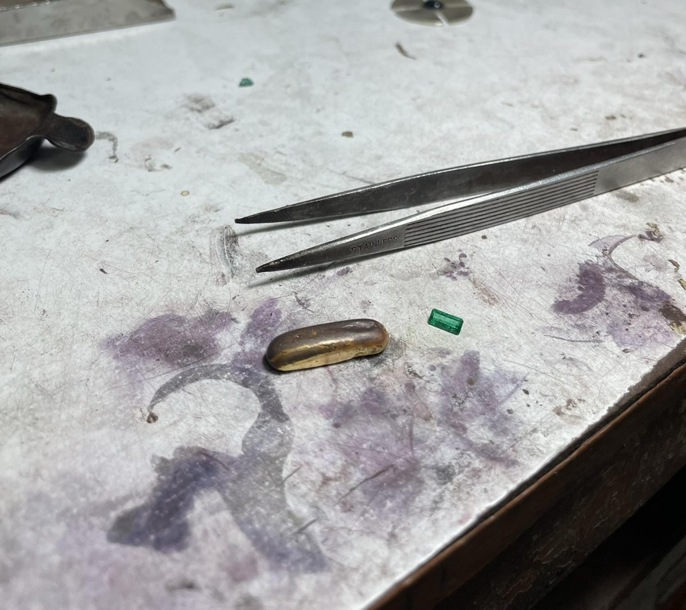
The finished piece
A ring in 24k gold, set with a Colombian emerald.
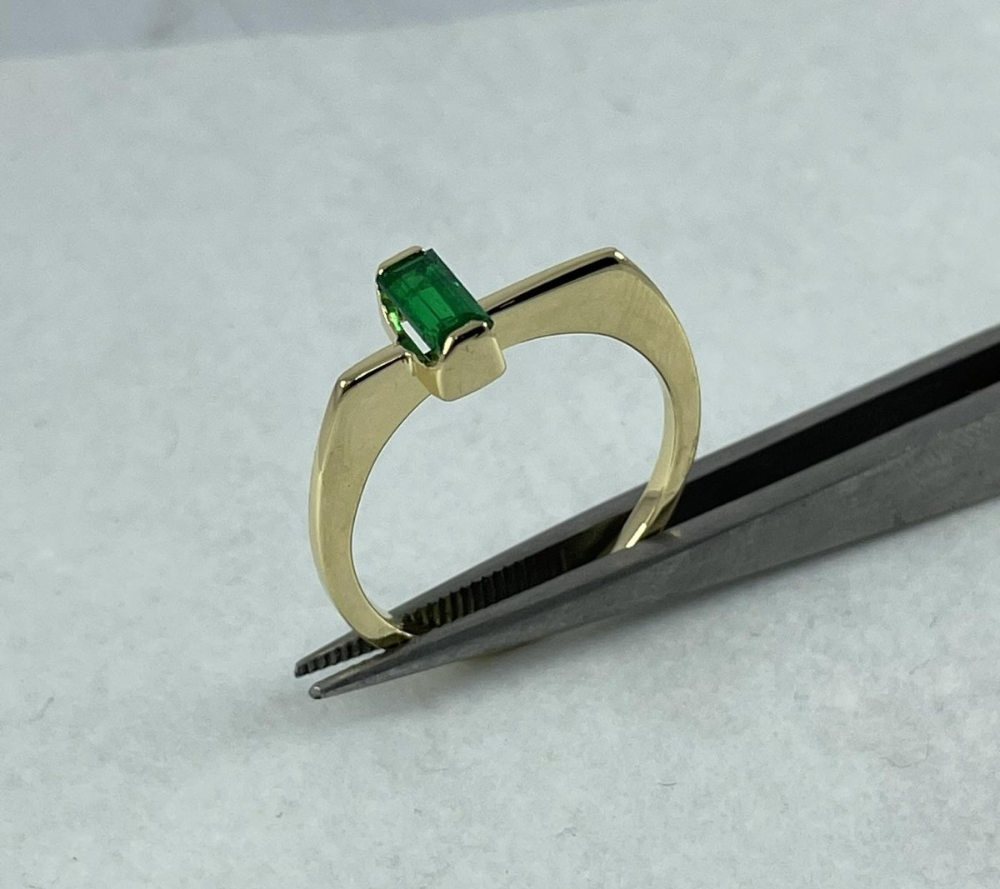
ParkIT · Co-founder and CTO
Real-Time Parking Analytics
A computer-vision service that turns a lot’s existing security cameras into real-time parking availability, taken from an incubator to acquisition by Numina.
10+active partners: cities, universities, hospitals and parking operators
Understand
ParkIT began as a Rice University engineering capstone that used existing security cameras to show which parking spaces were free. It was one of the first three startups in Jaguar Land Rover’s tech incubator, and I joined the founding team there to drive the product vision. Customers wanted live utilization and historical trends, to optimize pricing and understand their business.
Prototype
I led the machine-learning classification that marks each stall free or taken in real time, along with product strategy and customer integration.
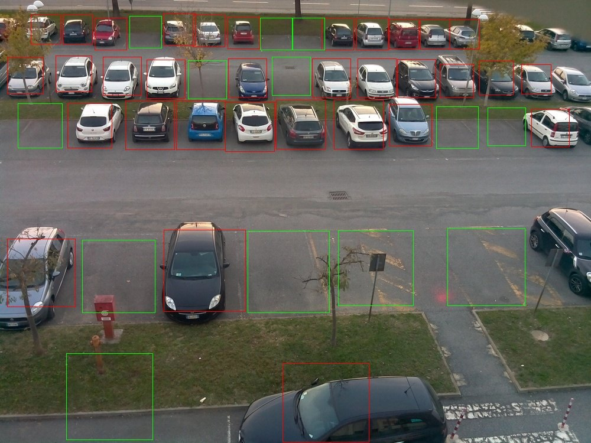
Ship
Customers got a dashboard for each lot, with live occupancy and utilization over time, backed by a documented API. ParkIT grew to 10+ active partners: cities, universities, hospitals and parking operators.